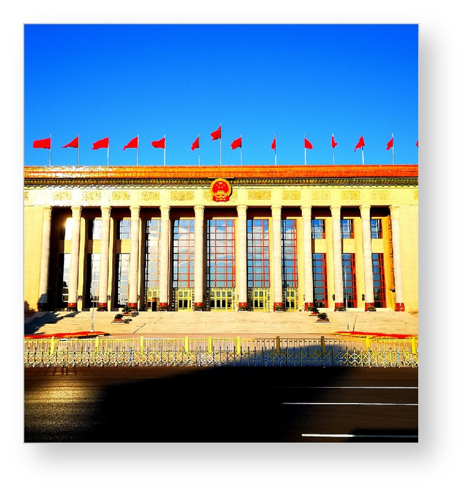
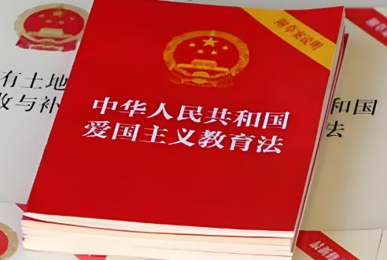
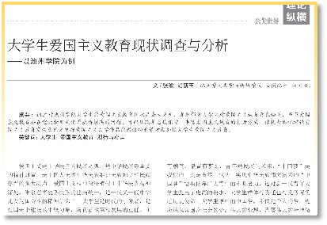

爱国主义是中华民族生生不息、薪火相传的民族心与民族魂，是凝聚全体中华儿女团结奋斗的精神纽带。不同于传统认知中单一的家国情怀，新时代爱国主义拥有更加丰富、立体、深刻的时代内涵，它扎根中华五千多年灿烂文明，传承红色革命血脉，贴合当代中国发展现实。新时代爱国主义倡导青年将个人理想、人生奋斗与国家前途、民族命运紧密相连，树立“家国一体”的价值认知。在新时代背景下，爱国不再是抽象的口号，而是具体的责任与行动，涵盖对祖国山河、历史文化、发展道路、制度体系的全面认同与自觉守护。培育新时代爱国主义精神，能够帮助当代青年树立正确的家国观、历史观与价值观，筑牢精神信仰根基，让青年在民族复兴的伟大征程中找准自身定位、扛起时代使命。

《中华人民共和国爱国主义教育法》的正式施行，标志着我国爱国主义教育迈入法治化、规范化、常态化的全新阶段，为全社会开展爱国教育提供了明确的法律依据和制度保障。该法律明确将青少年、在校学生列为爱国主义教育的重点群体，强调要依托校园课堂、社会实践、文化传播、红色资源等多元载体，全方位、常态化开展爱国主义教育。法律覆盖历史教育、国情教育、法治教育、民族团结教育、国家安全教育等多个维度，引导新时代青年尊重历史、敬畏先辈、热爱祖国、坚守正道。对于高校大学生而言，该法案的落地具有极强的指导意义，不仅规范了爱国教育的开展形式，更引导青年理性爱国、依规爱国、实干爱国，杜绝形式化、片面化的爱国行为，推动爱国主义精神真正入脑入心、落地生根。

坚持爱国、爱党、爱社会主义高度统一，是新时代爱国主义最核心、最根本的政治原则与价值准则，是百年党史与国家发展实践验证的正确真理。近代中国百年屈辱与抗争的历史充分证明，没有中国共产党的领导，就没有新中国，更没有中国特色社会主义的蓬勃发展。爱国必然拥护党的领导，爱党必然坚守社会主义道路，三者相辅相成、不可分割，共同构成当代中国青年爱国情怀的核心底色。新时代青年树立家国认知，必须自觉树立正确党史观、国家观、民族观，坚决维护国家主权、安全和发展利益，自觉守护民族团结与领土完整，坚决抵制历史虚无主义、网络错误思潮等不良风气。坚守三者统一的价值理念，能够帮助青年明晰历史逻辑、坚定道路自信，自觉将爱国热情转化为成长成才、报国为民的实际行动。